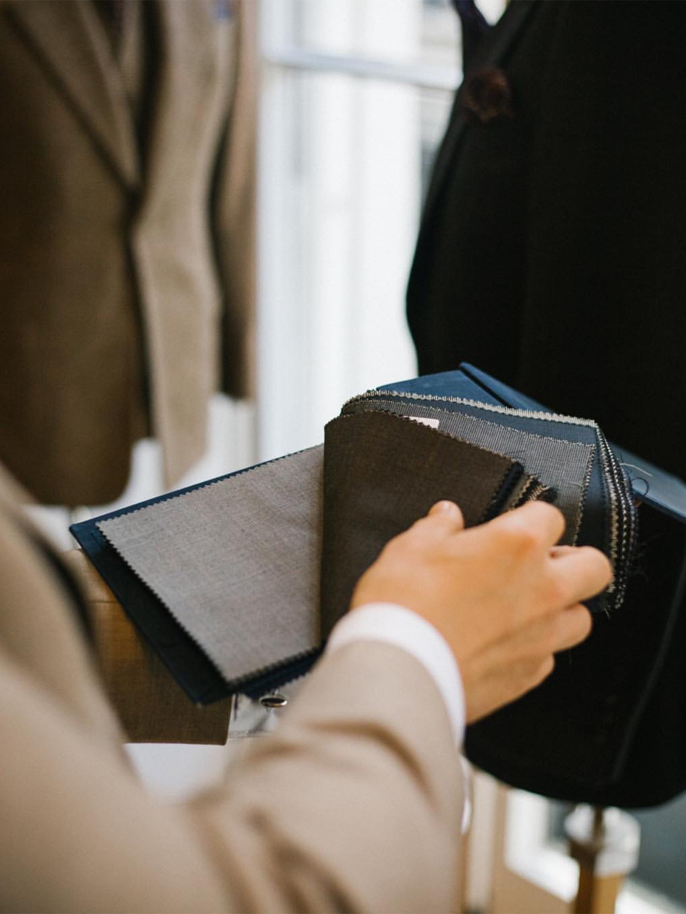

OUR PROCESS
한 벌의 수트가 예술이 되기까지
비스포크는 단지 옷을 맞추는 것이 아닌, 당신의 이야기를 담아내는 여정입니다.
VANIA의 공방에서 이루어지는 7단계의 섬세하고 정교한 과정을 소개합니다.

STEP 01
상담 및 디자인 선택
고객과의 깊은 대화를 통해 라이프스타일, 취향, 그리고 수트를 입게 될 상황을 파악합니다. 수백 가지의 원단과 다양한 디자인 옵션을 살펴보며 함께 스타일의 방향을 결정합니다.
STEP 02
신체 치수 측정
20여 곳이 넘는 신체 부위를 정밀하게 측정합니다. 이는 단순히 둘레를 재는 것을 넘어, 양쪽 어깨의 높이, 팔의 각도 등 개인의 고유한 체형 특성까지 기록하는 과정입니다.

STEP 03
패턴 제작
측정된 데이터를 바탕으로 마스터 테일러가 직접 종이 위에 옷의 설계도인 '패턴'을 그립니다. 이 단계는 오직 한 사람만을 위한 옷이 탄생하는, 비스포크의 가장 핵심적인 과정입니다.
STEP 04
원단 재단 및 가봉
완성된 패턴을 따라 원단을 정교하게 재단하고, 임시로 옷의 형태를 바느질하여 만듭니다. '가봉(Basting)'이라 불리는 이 옷은 첫 번째 피팅을 위한 준비 단계입니다.
STEP 05
1차 가봉
고객이 처음으로 자신의 옷을 입어보는 시간입니다. 전체적인 실루엣과 균형, 편안함을 확인하고, 수정이 필요한 부분을 핀으로 표시하며 세밀하게 조정합니다.
STEP 06
2차 가봉
1차 가봉의 수정 사항을 반영하여 거의 완성된 상태의 옷을 다시 입어봅니다. 소매 길이, 라펠의 모양 등 마지막 디테일까지 고객과 함께 확인하며 완벽을 기합니다.
STEP 07
완성 및 납품
모든 공정을 마친 세상에 단 하나뿐인 당신의 수트가 완성됩니다. 최종적으로 옷을 입어보고, 최상의 상태를 유지할 수 있도록 관리 방법을 상세히 안내해 드립니다.